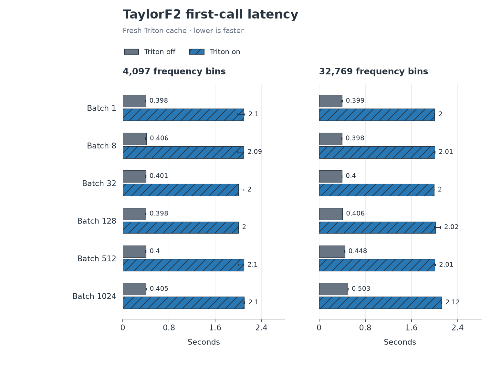
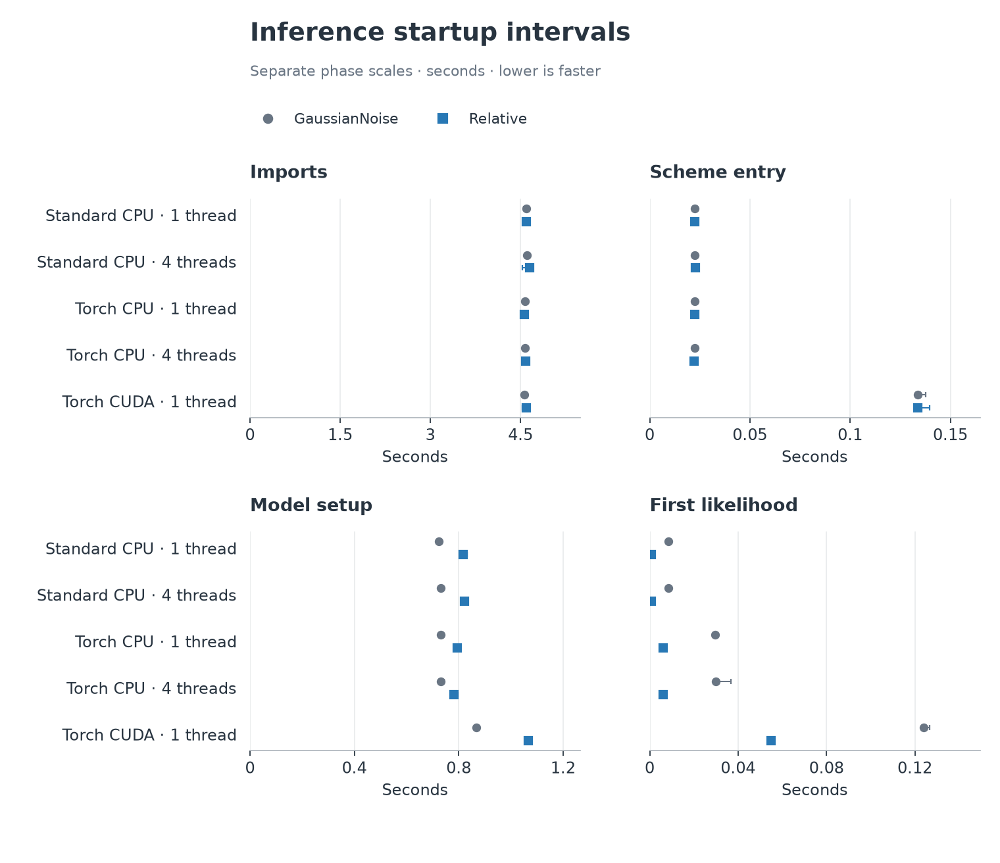
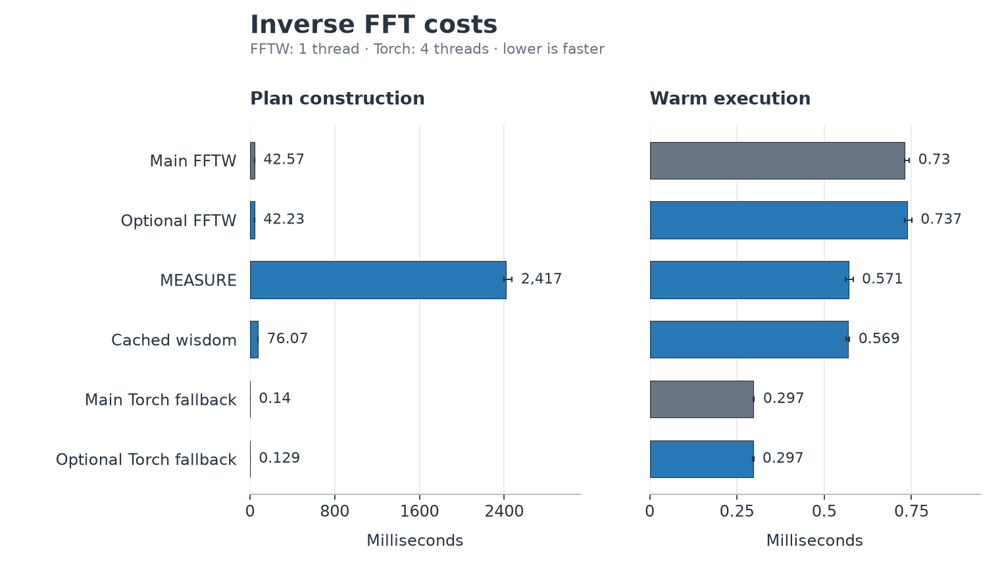
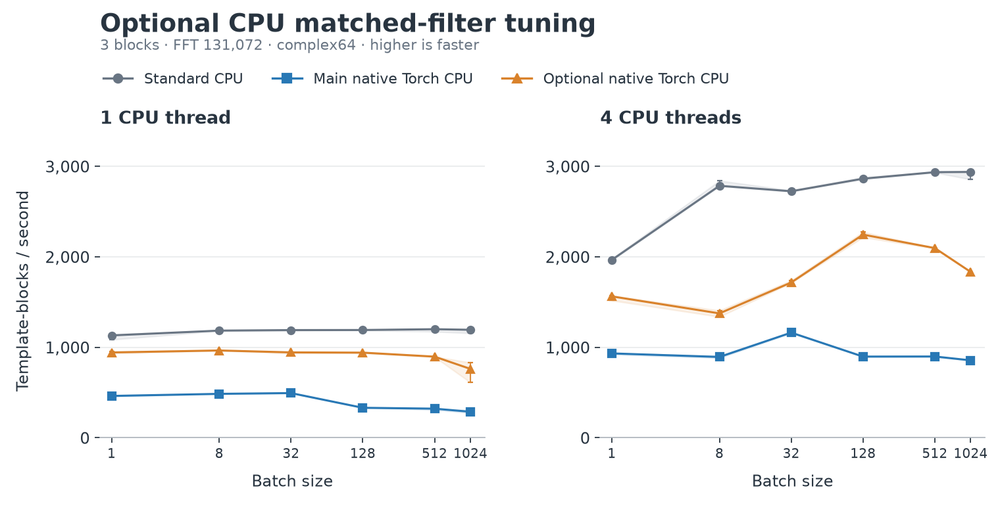

Benchmark details and reproduction¶
Start with Optimized compressed-waveform search for executable measurements and Torch benchmark results for supporting component comparisons.
Performance-fix campaign¶
The paired campaign contains 252 live workers (including 36 standard CPU controls), 108 waveform workers and 108 passing live parity records. It covers batches 1, 8, 32, 128, 512 and 1024, CPU with one or four threads, and CUDA with one host thread. Workers run sequentially with affinity 8–11. The second of three replicates reverses before/after order. Profilers run separately from the workers used for throughput claims.
Before source: dfd42bf76766cadca0eecf609a1eaeac73534676.
After source: 97bf1614f3afe53a6e2edb4d8c7dff79e9661782.
The v1 after tree also corresponds to local fix commit
450ab3f96ccea2783abb943b47f698578a507d59. These are measured source revisions;
subsequent documentation and CI-selector edits do not constitute new timings.
Source files, trees and binary hashes are retained in the fix evidence.
The v2 GPU follow-on measures
0d00581251e642a5d6b56b2497a9adad93069e6b. It repeats the two GPU routes
at all six batch sizes with three workers per configuration, after the original
campaign and postchecks finish. It reuses the earlier standard controls and
before/v1 records; the archive distinguishes these run periods. V2 leaves the
CPU reduction algorithm and waveform source unchanged. Separate main, FFT and
CPU branch test receipts identify the actual v2 qualification commits.
The optional CPU follow-up measures
bd53914be6d2e4324cc867d52b3842b77cc6729a against
1514327669fc7be125523b991c847868c3a2a17e, with native peak
routing explicitly enabled on both. It contains 36 workers and 12 parity records.
The live-search figures convert the legacy template-blocks/s records to
templates/core at real time (CPU) or templates/GPU at real time (CUDA).
The frozen harness sets blocksize=56.0 seconds and sample_rate=2048.0 Hz;
the filter searches that 56-second valid segment within each 64-second FFT.
The conversion is rate * 56 / threads for CPU and rate * 56 for CUDA.
Threads are the configured one/four-core compute budget, with affinity 8–11
covering four distinct physical cores. This normalization changes neither the
timings nor speed ratios. It describes this synthetic matched-filter component;
I/O, PSD estimation, waveform generation and veto costs are excluded.
The live harness’s legacy throughput_wps_summary field says
waveforms/second but counts template-block evaluations; the reports preserve
that raw record and use the actual numerator for the conversion.
At batch 1024, the baseline native CUDA profile spent about 1.06 s of a 1.10 s instrumented call checking overlaps, with 1,573,376 pair comparisons. The baseline native CPU profile spent about 2.09 s of a 4.09 s call reducing peaks and 1.01 s checking overlaps. These instrumented values attribute costs; they are not throughput measurements. Baseline and candidate Python and Torch operator profiles are both retained in the fix evidence.
The v1 native CUDA profile reduces overlap-validation cumulative time from 1055.89 ms to 2.78 ms. The native CPU profile reduces peak-extraction cumulative time from 2085.84 ms to 770.81 ms. These are separate instrumented calls. The profile attribution reports all 12 before/v1 profile pairs, full operator counts and source paths. The waveform specialization removes arithmetic involving known-zero terms while preserving Horner order; it does not remove the logarithm evaluations.
The fix reproduction instructions describe the exact public workloads,
flags, source preparation, correctness checks and separate profiling commands.
The paired report includes three-worker ranges and all before/after ratios.
The performance figure manifest
records the measured revisions, report and renderer hashes, and image hashes.
To regenerate the paired figures from the archive supplement, run:
python build-report.py --input comparison --out report-new
The validator requires all expected records, passing parity, matching source identities and consistent runtime metadata. It recomputes live parity from recorded triggers and norms. Missing or failed cells are not plotted.
Earlier campaign details¶
The following startup, FFT, optional CPU and source records predate the performance fixes. Their original revisions and immutable links are preserved.
Startup costs¶
Median first-call costs across the TaylorF2 workloads were 1.996–2.121 s with Triton, versus 0.398–0.503 s without it. Each worker had a fresh Triton cache. Timing includes compilation and lazy initialization; the CUDA driver cache was not cleared. These timings are separate from warm throughput.
{kind=link}

First-call latency; lower is faster.¶
Inference startup was measured in four separate intervals. They exclude some process startup work and must not be added up as a complete startup measurement.
{kind=link}

Separate intervals in seconds; lower is faster. Marker shapes distinguish
GaussianNoise from Relative.¶
FFT planning and execution¶
For a length-131072 complex64 inverse FFT with one thread, FFTW MEASURE
reduced warm execution from 0.737 to 0.571 ms, while plan construction
rose from 42 to 2,417 ms. Reusing cached wisdom reduced plan construction
to 76 ms, with 0.569 ms execution. The four-thread Torch fallback
was faster at 0.297 ms. This single-vector test covers cache behavior,
not every batch-layout change in the optional FFT follow-up.
{kind=link}

Separate planning and execution scales. FFT records include numerical, dispatch and cache checks.¶
Optional CPU tuning¶
At batch 1024, the optional native CPU configuration was 2.65x the main native configuration with one thread and 2.14x with four threads. Standard CPU was still faster. The optional configuration also enables a CPU peak kernel, so this comparison includes a flag change as well as code changes.
{kind=link}

Correlation and FFTW batching are requested in both native configurations; optional CPU also requests native batch peaks. Dispatch probes identify which kernels ran. Live records retain all controls and configurations.¶
Methods and source revisions¶
Workers ran sequentially on a shared Linux host with CPU affinity 8–11. Reported centers are medians of three worker summaries; whiskers are their observed minimum and maximum, not confidence intervals. Repeated samples within a worker are not independent runs. CPU threads are stated per plot; CUDA uses one host thread.
Measurement |
Source commit |
|---|---|
Live filtering, waveforms and Triton (six-batch sweep) |
|
Optional CPU follow-up (six-batch sweep) |
|
Single-evaluation inference and main FFT control |
|
Single-vector FFT follow-up |
|
These are assembled-source measurements, not separate timings of intermediate PRs. Live filtering includes 252 timed workers in 84 comparison groups and 60 separate dispatch probes. The waveform sweep includes 144 timed workers and 144 unsupported requests retained without speed claims. The Triton comparison adds 72 timed workers. All three sweeps use batches 1, 8, 32, 128, 512 and 1024; the baseline waveform sweep explicitly disables Triton.
The 18 FFT and 30 inference workers are earlier single-vector and single-parameter measurements. Their original source revisions remain above. Separate 1024-row tests check batched FFT and inference correctness. These were manual runs, not GitHub Actions measurements.
The results apply to these revisions and workloads. They do not qualify MPS, complete production searches, sampler throughput, deadline jitter or other hardware. See Benchmarking Torch for broader evidence requirements and Torch scientific parity for numerical contracts.
Reproduce the results and figures¶
The immutable archive retains raw samples, commands, environment records, logs, figures and checksums. Follow the six-batch instructions to rerun live filtering, waveform generation and Triton in new output directories. The historical instructions cover the earlier scalar inference and FFT runs.
The documentation figures are simplified renderings of the archive’s verified
summaries. The figure manifest
records input hashes, selected cells, measured revisions and image hashes.
Live-filter, waveform and Triton figures show all six measured batch sizes
through 1024. Requested routes omitted from overview plots remain in the
linked full results, including slower and unsupported cases.
To regenerate the documentation figures from a checkout of the pinned archive, run this command from the PyCBC source tree (requires Matplotlib):
python tools/plot_torch_benchmark_docs.py --archive ARCHIVE_CHECKOUT --output docs/images/torch-benchmarks-20260906
The renderer checks summary hashes before plotting. Documentation edits do not constitute new measurements. Publish raw evidence before changing result claims, preserve slower and unsupported cases, and inspect regenerated figures.